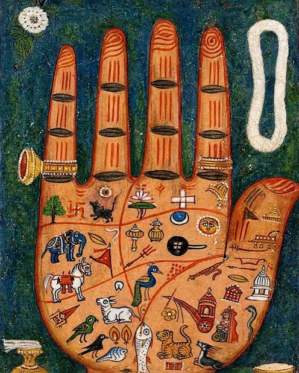

01
PΛLMΛ / THE GENESIS EXPERIENCE
Before the touch.
Beyond the ordinary.
An ancient gesture. A new dimension.
Turn the wheel. Bring two worlds together.
ANCIENT ART × FUTURE RITUALSkip experience ↓
01 · ORIGIN02 · CONTACT03 · AWAKENING
✦
DRAG / SWIPE TO AWAKEN
THE MYSTERIES OF YOUR HANDS, REIMAGINED.
Ancient soul.
Cosmic touch.
Step into a world of emerald shadows, golden light,
and the stories traced across your palms.
A PRIVATE MOMENT OF DISCOVERY
EVERY CREASE. EVERY DETAIL. UNIQUELY HUMAN.
01 / THE SANCTUARYSCROLL TO DISCOVER ↓
A MEETING OF TWO WORLDS
A little mystery.
A world of wonder.
Inspired by classical sculpture and the human fascination with hands, PALMA invites you to slow down, look closer, and explore palmistry as a cultural tradition.
02 / THE LIVING ATLAS
Touch a line.
Enter its world.
Turn the palm. Follow the light.
An interactive guide to traditional symbolism.
03 / YOUR PALM STUDIO
Your hands.
A closer look.
✧ Browser image processing
Use your own photographs to explore real image transformations. Add both palms, then step into the laboratory.
02
Right palm
AWAITING IMAGEAdd both palms to begin. No account or image storage required.
Even lighting · open palm · plain background · full fingers and wrist
Preparing your images…
◇ PRIVATE BY DESIGN
Hosted mode processes images on this device. Your photographs are not uploaded.
04 / THE IMAGE LABORATORY
See the science.
Keep the wonder.
Real pixels. Visible transformations.
Compare every step of the process.
⌁
Your laboratory awaits.
Add two palm photographs to reveal the processing stages.
05 / YOUR FIELD NOTES
Two palms.
One exploration.
Your visual comparison and six cultural reflection topics appear after analysis.
LOCAL KNOWLEDGE MODE
06 / THE ORACLE ROOM
Curiosity,
in conversation.
A guide to the traditions, the image-processing methods, and your current session.
LOCAL KNOWLEDGE · NO LIVE AIThe local guide retrieves curated explanations. It is not a live language model or a fortune predictor.
✧ THE PALMA GUIDE
Welcome to the atelier. Ask about a palmistry tradition or an image-processing step. After analyzing your palms, I can also compare your visual measurements.

USER-SUPPLIED TRADITIONAL PALM ART07 / THE HERITAGE ROOM
Symbols carry stories.
Hands carry history.
Your reference artwork brings a different visual language to the atelier: animals, ornaments, and painted marks arranged across a palm. Explore it as art and cultural symbolism.
Keep the two lenses separate: historical illustrations inspire the experience; image processing measures pixels in your own photographs.
08 / BEHIND THE WONDER
Art on the surface.
Evidence underneath.
A transparent academic workflow.
No invented accuracy or personal predictions.
Two clear images
Independent left and right photographs, size and resolution checks, and image-quality measurements.
Make detail visible
Grayscale, Gaussian smoothing, contrast enhancement, edge detection, thresholding, and morphology.
Inspect the evidence
Compare actual outputs. Exploratory crease candidates remain low-confidence, unverified associations.
Explore the tradition
Six cultural topics, visual comparison, and a guide grounded in the current session and curated knowledge.
Privacy, modes, and project limitations +
On this hosted site, processing runs in your browser with no photo upload. Images and chat remain in page memory until you clear the session or close the tab. Downloaded reports are saved to your device.
The downloadable Python application uses Flask, OpenCV, and optional MediaPipe. Its optional Gemini/OpenAI connection sends structured measurements and chat text, not raw palm photographs, to the selected provider. Add your own API key only to the local .env file.
Browser mode uses adaptive contrast enhancement and Sobel edges. Python mode uses OpenCV CLAHE and Canny. Neither mode has a trained palm-line classifier. Palmistry is cultural entertainment and cannot predict lifespan, health, wealth, or future outcomes. This project does not implement biometric identity authentication.
Visual credits: user-supplied fresco reference and traditional palm artwork; generated photographic hand and decorative dove. PALMA’s modern effects are layered photographic and CSS depth effects, not a volumetric anatomical hand model.
THE ANATOMY OF A STORY
Follow your curiosity.
Four lines. Centuries of interpretation.
Choose a line to explore its traditional meaning.
TRADITIONAL PALMISTRY · AN EXPLORATION OF DETAIL
YOUR NEXT CHAPTER
It begins with
your hands.
Two palms. A little light. A moment for yourself.